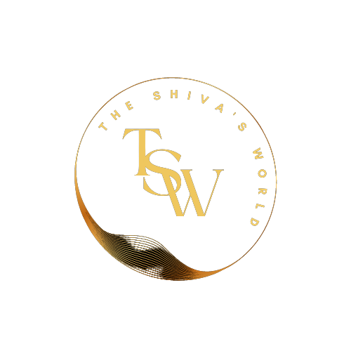

ITS TIME TO TAKE A ROUND OF THE ONE LIFE, MULTIPLE TYPES OF LIFESTYLE LIVING.
THE SHIV'S World
Diagram Title: UPSC Exam Preparation Roadmap
Start
Initial Assessment: Assess your current knowledge, strengths, and weaknesses.
Understanding the UPSC Exam
Exam Structure: Understand the three stages - Prelims, Mains, and Interview.
Syllabus: Familiarize yourself with the extensive UPSC syllabus.
Create a Study Plan
Timetable: Establish a realistic study schedule.
Long-term Goals: Define your objectives and targets.
Short-term Goals: Break your study plan into manageable segments.
Resources and Materials
Textbooks: Select recommended UPSC preparation books.
Online Resources: Utilize websites, blogs, and forums.
Coaching: Consider enrolling in a coaching institute if necessary.
Prelims Preparation
General Studies (GS): Cover topics such as History, Geography, Polity, Economy, Science, and Current Affairs.
CSAT (Civil Services Aptitude Test): Focus on aptitude and reasoning skills.
Mains Preparation
Optional Subject: Choose an optional subject and study it in-depth.
General Studies (GS): Go deeper into GS topics, including essay writing.
Previous Year Question Papers: Practice solving past papers.
Answer Writing Practice
Essay Writing: Develop essay writing skills.
Mains Paper Practice: Practice answer writing for Mains papers.
Current Affairs
Daily Reading: Stay updated with current affairs through newspapers and magazines.
Current Affairs Notes: Maintain a current affairs diary.
Mock Tests and Revision
Prelims Mock Tests: Take regular mock tests.
Mains Answer Writing Practice: Write and review model answers.
Revision: Regularly revise what you've learned.
Interview Preparation
Personality Development: Enhance your communication and soft skills.
Mock Interviews: Participate in mock interview sessions.
Current Affairs Review: Stay updated on current events.
Stay Healthy and Manage Stress
Diet: Maintain a balanced diet.
Exercise: Incorporate physical activity into your routine.
Stress Management: Practice relaxation techniques.
Stay Motivated
Join a Study Group: Share experiences with fellow aspirants.
Positive Mindset: Stay positive and motivated.
Continuous Learning
Stay Updated: Adapt to changes in the UPSC exam pattern.
Feedback: Seek feedback from mentors and peers.
Exam Day
Stay Calm: Keep your composure on the day of the exam.
Time Management: Manage your time effectively.
Results and Feedback
Evaluate: Assess your performance in the exam.
Learn from Mistakes: Identify areas for improvement.
Post-Exam Strategies
Reassessment: Decide on your future endeavors.
Plan B: Consider alternative career paths if necessary.
Conclusion
Success: Achieve your goal of clearing the UPSC exam.
Resilience: Reflect on your journey and lessons learned.
Remember that UPSC exam preparation is a long and challenging process, and your roadmap should be adaptable to your unique circumstances and needs. Stay persistent and focused on your goal.
Managed by :- Shivnarayan Singh Shekhawat